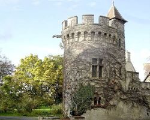
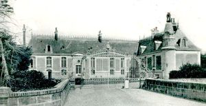

Recensement Jean-Claude Truffet
| Département | 14 — Calvados |
| Canton | Bayeux |
| Commune | Commes |
| Type d'édifice | Château |
| Période d'origine | XVI-XVIII |


Deux châteaux dans cet article; Bosq et Commes. BOSQ, ancien fief du Bosq et de Moon relevant de la baronnie de Saint-Vigor; château édifié à une date indéterminée à la fin du moyen âge. Au XVIIIe siècle, pour la famille d'Isigny, le logis fut remanié, aménagement d'une avant cour entourée de communs et un jardin ; acquis vers 1890 par le comte de Potigny qui le fait restaurer de 1893 à 1896 par J. Jean, architecte au Vésinet : remodelage du logis, édification de la tour de l'horloge, démolition de l'aile sud de l'avant cour, transformation des ailes est et ouest, espace de l'avant cour aménagé en jardin régulier, création de la cour des écuries, et établissement d'un jardin paysager; vers 1975, installation d'une deuxième cour des écuries dans la partie nord de l'ancien jardin; communs divisés en plusieurs propriétés. Logis en moellon couvert d'un enduit imitant la pierre de taille et la brique, avant corps sur jardin à faux bossages, avant corps sur cour et lucarnes en pierre de taille ; composé d'un sous-sol, d'un rez-de-chaussée surélevé et d'un étage de comble ; élévations à travées ; toit conique en zinc terminé par un campanile sur la tour de l'horloge, toit polygonal sur le pavillon sud-ouest ; ailes des communs : moellon enduit et faux pan de bois, plan régulier en U primitivement, toits à demi-croupe sur les hangars sud ; toit en pavillon sur le pavillon de l'ancien jardin.
COMMES, durant la période médiévale le village s'est développé en plusieurs hameaux ayant chacun sa spécificité : bourg de l'église constituant le fief de l'évêque de Bayeux, grandes fermes à Escurès, tête d'un pont important sur la route de port en Bessin au pont Fatu, pêcheurs et journaliers au Bouffay ; fin XVIIIe siècle à la suite de la création de la nouvelle route Bayeux-Port-en-Bessin, le hameau d'Escurès s'étend vers l'ouest où se crée un quartier commerçant. Le château de Commes a été construit dans la première moitié ou au milieu du XVIIIe siècle. A la fin du XVIIIe siècle ou dans les premières années du XIXe siècle, avant le cadastre de 1809, agrandissement du corps de logis par l'édification de deux pavillons. Au milieu du XIXe siècle, avant 1878, adjonction d'une tour et, peut-être à cette époque, transformation des communs. En 1878, le château est acquis par la famille Manneville qui fait transformer le jardin régulier, en jardin paysager, édifier la chapelle dédiée à Saint-Michel en 1891 et, de la même époque, la fabrique de jardin et le logement du gardien. Logis en moellon enduit, tour en pierre de taille couverte en terrasse, façade principale ordonnancée ; chapelle en moellon enduit, voûtée d'ogives, abside à croupe polygonale, clocher mur à baie unique en façade ; logement du gardien et fabrique de jardin en brique avec pierre en remplissage.
Bosq, famille d'Isigny Commes, famille Manneville
"
Deux châteaux dans cet article; Bosq grav-2 et Commes grav-1.
49° 20' 16" nord, 0° 44' 10" ouest